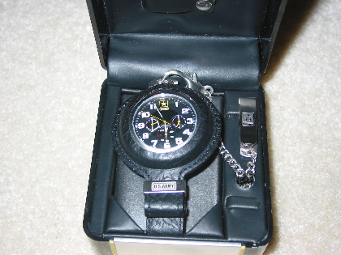

There has not been one there for too long, and I have greatly missed having one on my presence. Took a while to find a suitable one though. Relatively impossible to find a physical store that sells them, so to the online world. Then trying to find one that is usable. They make a lot of nice pocket watches that would never make it more then a week or two under real use. (You know, like putting it in your pocket everyday.)
They build those watches to look good, and while they're at it, they throw in the ability to keep time too. Icky. But after much digging, I find the steel ones. Then had to dig some more. As I learned from my last pocket watch, if the knob on top sticks out too much, it gets caught on things. After getting caught a few times, it will just come right off. So to find one that has a knob you can grab, but doesn't stick out so much it gets caught everywhere. I found one.
It does not surprise me at all that it took the U.S. Army to design a watch that is practical.
